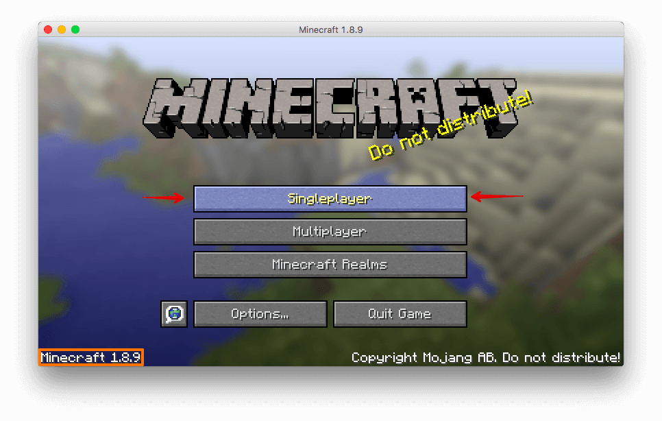

Minecraft Gameplay Basics
There are two primary gamemodes for Minecraft; singleplayer and multiplayer. This part will cover singleplayer mode.
Let's start off right on the launcher. The main section is content from the tumblr blog with all of their announcements. The bottom area has buttons for launching the game, maintaining profiles, and switching users. Clicking 'New Profile' results in the window below.
This window allows you to create multiple instances of Minecraft that can be customized in various ways. Most of the settings are for advanced debugging and things that you would need for modding. For now, If you click the dropdown that says 'Use Latest Version' you can select an older version of Minecraft that you can play with. After you're done click 'save profile' at the bottom right and you will return to the main launcher screen.
The launcher should have your new profile selected and you just hit play. The game will start downloading the files it needs to run and then launch.

Playing the game!
Click on single player and you will go to a screen with a (currently blank) list with all of your worlds. Click on 'Create New World' at the bottom and you will see a screen with options for the world. Give your world a name and choose your gamemode. Survival mode is primarily adventuring and gathering resources to make it through to the end.
This screen lets you choose generation features of the world. You can enter in a seed that adjusts the way the world generates. You can also turn village, dungeon, and stronghold generations on or off in game. The bonus chest is a small chest that generates near your initial spawn point with some starter items to help you survive the first day. The cheats button toggles the ability to use slash commands like /time, /gamemode, and /xp to modify gameplay. The world type button will be discussed at a different time.
Once you have adjusted all the settings to the way you like click 'Create World' and you can start playing!
The following are all the control for the game.
| Mouse/Key | Function |
|---|---|
| Mouse Move | Turning, Aiming crosshairs/Looking around |
| Left Click | Break Blocks/Attack |
| Right Click | Place Blocks/Use Items |
| Mouse Scroll | Switch Items in hotbar |
| W | Move forward, Double tap and hold for sprint |
| A | Strafe left |
| S | Move Backward |
| D | Strafe Right |
| Space | Jump |
| Left Shift | Sneak |
| E | Inventory |
| Q | Drop one of item held |
| 1-9 key | Move to corresponding hotbar slot |
| F1 | Toggle HUD(Heads Up Display) |
| F2 | Take Screenshot |
| F3 | Turn on debug HUD |
| F5 | Switch between first and third person camera angle |
| F11 | Toggle windowed or fullscreen mode |